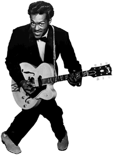

Chuck Berry


- Johnny B.Goode (303k)
- Говорят, что именно Chuck Berry придумал, как играть
Rock'n'Roll на гитаре. Даблстопный драйв
перегруженного лампового усилителя до сих пор
воздействует на слушателя сильнее любых
новомодных гитарных примочек.
- Roll Over Beethoven (271k)
- Другой классический Rock'n'Roll от Chuck Berry, без
сомнения, чем-то напоминает нам Johnny B.Goode.